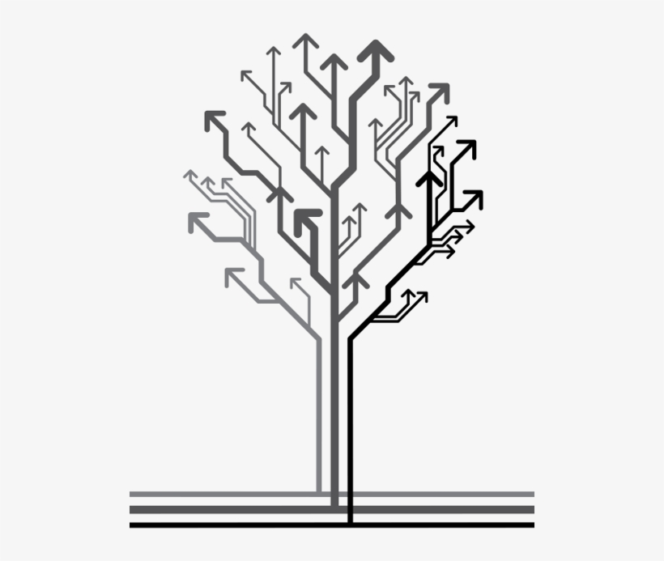
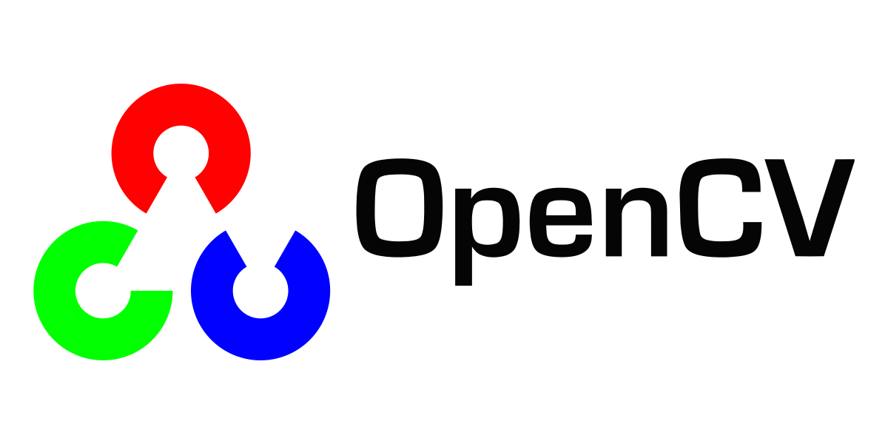

Created a fully automated ecosystem of NPCs using Reinforcement Learning in Camelot which is a highly-customizable, modular virtual environment designed for creating interactive narrative games and game prototypes.
Python
Reinforcement Learning
GUI


In this project, LSTM, XG-Boost and LGBM models were use to predict crypto.

In this project we use SQL Server to explore global COVID 19 data and visualize the data with Tabelau.

In this project, LSTM, XG-Boost and LGBM models were use to predict crypto.

First, data manipulation, missing value handeling, and data normalization are implemented in this project. Second, design k-NN classifier using hyper-parameter tuning and model selection. Last, analysis results from Cross-validation and visualize the results.

- Constructing Decision Tree Manually using the Gini Index.
- Calculate the impurity measures (Entropy, Gini index, information gain, misclassification error).
- Train a classification tree.

In this project, the fundamentals of image processing and computer vision are introduced, including image models and representation, image analysis methods such as feature extraction (color, texture, edges, shape, skeletons, etc.), image transformations, image segmentation, image understanding, motion and video analysis, and application-specific methods such as medical imaging, facial recognition, and content-based image retrieval.

In this project, I made a bike sales dashboard by excel (data cleaning, pivot table). Data (Marital Status and Gender) was converted to more understandable characters and duplicates data were removed.